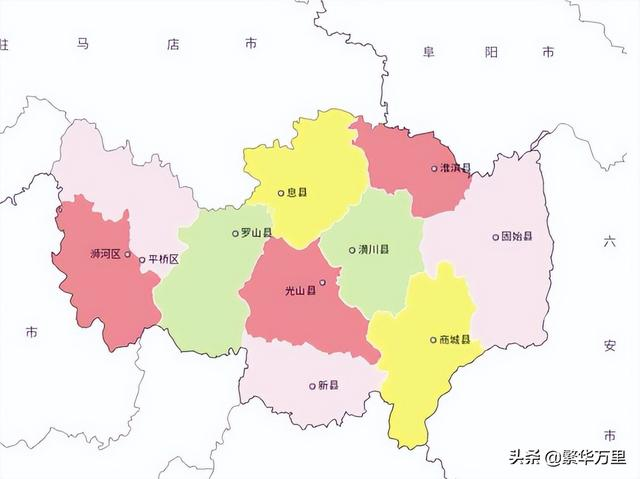

市名由来：
信阳，春秋时期为申国，后被楚文王所灭。秦朝属于南阳郡义阳乡。曹魏时设置义阳郡。隋朝大业初改为义州。北宋太平兴国元年（976年），开始改称“信阳”。因古文中“信”与“申”同，改称“信阳”是认为这里为“申国”故地的缘故。对于“信阳”的改名，有另一种说法是：宋太宗赵光义，讳“义”字，古代“信”与“义”意近，故改名“信阳”。。
信阳市市花：桂花
桂花，八月飘香，淡雅烂漫，承载信阳红旗不倒、坚持斗争的革命精神。
信阳市市树：银杏
银杏，生命力强，树形雄伟，象征健康长寿、幸福吉祥，具有重要的文化意义和深厚的文化底蕴
地理环境:
信阳市位于中国华中地区，河南省南部，地处东经113°45′—115°55′、北纬30°23′—32°27′之间。位于鄂豫皖三省交界处、河南省南部、淮河上游地区，处于大别山北麓与淮河上游之间，北接驻马店市，东邻安徽省阜阳市、六安市，南邻湖北省黄冈市、随州市和孝感市，西衔南阳市。全市东西长约205千米，南北宽约142千米，全市总面积18916平方千米
地形地貌
信阳市地势南高北低，是岗川相间、形态多样的阶梯地貌。西部和南部是由桐柏山、大别山构成的豫南山地，周边群山环绕，面积近7000平方千米，占全市总面积的36.9%。两山首尾相接，连成一体，蜿蜒于豫鄂边界，是江淮两大流域的分水岭。大别山在信阳境内长约200千米，占豫南山地的80%；东段山脊高峻雄伟，海拔在千米以上，西段宽阔低缓，以千米以下低山为主，间有丘陵分布。桐柏山在信阳境内69千米，占豫南山地的20%，山势高峻陡峭。其中大别山—金刚台（海拔1584米），为信阳境内最高峰。中部是丘陵岗地，位于豫南山地以北，明港、寨河、固始连线以南，海拔50—100米，面积7000多平方千米，占全市总面积的38.5%。由于受淮南水系的强烈切割和冲淀，形成高差20—40米的丘陵起伏，岗谷相间的形态组合特征。此区梯田层层，河渠纵横，塘堰密布，水田如网，酷似江南风光，是信阳的粮食生产基地。北部是黄淮平原和洼地，面积4000多平方千米，占全市总面积的24.6%。其中平原海拔30—59米，面积占全市总面积的17%；洼地海拔22—35米，主要分布在淮河两岸，面积占全市总面积的7.6%
水文
信阳市河流众多，属长江、淮河两大水系。其中，淮河流域面积占全市总面积的98.2%，属长江水系的流域面积仅占1.8%。地处淮河上中游，淮河自西向东横贯全境长363.5千米，流域面积在1000平方千米以上的较大支流10条，流域面积在100平方千米以上的支流49条，流域面积在50平方千米以上的支流126条。境内的淮河支流密集，淮干南部支流大都发源于桐柏山和大别山，源短、坡陡、流急，水量丰富，流程在百千米以上的有浉河、竹竿河、潢河、白露河、灌河、史河，均按西南—东北方向汇入淮河；淮干北侧支流多为坡水河道，河身狭窄，河道弯曲，流经平原洼地，流程在百千米以下，由西北—东南方向汇入淮河。全市多年平均降雨量1098毫米，受特殊地理位置和气候的影响，降水时空分布不均，降水量年内、年际之间变化很大，降水主要集中在主汛期的6—8月，占全年的54%；丰、枯年相差可达2—3倍，径流量相差8—9倍。
气候
淮河流经信阳市北部，信阳绝大部分地区位于淮河以南，属亚热带向暖温带过渡地区，季风气候明显。信阳山清水秀，水田盈野，稻香鱼跃。信阳日照充足，年均日照时数1900—2100小时；年平均气温15.3—15.8℃，无霜期长，平均220—230天；降雨丰沛，年均降雨量993—1294毫米，空气湿润，相对湿度年均74—78%。四季分明，各具特色。春季天气多变，阴雨连绵，季降水日数多于夏季，季均降雨量224—316毫米。夏季高温高湿气候明显，光照充足，降水量多，暴雨常现，季均降水量478—633毫米。秋季凉爽，天气多晴，降水顿减，季均降水量177—225毫米。冬季气候干冷，降水量少，季均降水量91—120毫米。寒冷期短，日平均气温低于0℃的日数年平均30天左右
历史沿革：
先秦时期
夏商周：属九州中的“豫州”，为古中原文明与荆楚文化的交融地带。西周：境内分属申国（今浉河区、平桥区一带）和息国（今息县）。申国为姜姓诸侯国，息国为姬姓小国。
春秋战国：前688年，楚国灭申国，设申县；前682年灭息国，设息县。战国时期，信阳全境属楚，成为楚国北扩的重要据点。今光山县一带为春申君黄歇封地。
秦汉至南北朝
秦朝：属九江郡（一说南阳郡），推行郡县制。 西汉：分属江夏郡（西阳县、鄳县）和汝南郡（息县、期思县）。东汉至三国：属魏国，仍为江夏郡、汝南郡辖地。
南北朝：南北政权反复争夺，区划频繁变动。南朝宋设司州（治义阳，今浉河区），齐梁设南郢州，北朝东魏置郢州，北周改申州。
隋唐五代
隋朝：废州置郡，设义阳郡，辖义阳、钟山、罗山等县。 唐朝：改义阳郡为申州，属淮南道。安史之乱后，申州成为军事要冲。五代十国：先后属后梁、后唐、后周，战乱频繁。
宋元时期
北宋：初置义阳军，太平兴国元年（976年）避太宗赵光义讳，改称信阳军（“信阳”之名始于此），属荆湖北路。 南宋：为抗金前线，岳飞曾在此驻军。元朝：改军为州，设信阳州，属河南江北行省汝宁府。
宋元时期
明朝：洪武年间降州为县，属汝宁府。成化年间复升信阳州，辖罗山、确山等县。清朝：沿袭明制，信阳州属河南省南汝光道，为豫南商贸枢纽。京汉铁路（1906年通车）推动近代化进程。
近现代
民国：1913年废州为信阳县，1932年属河南省第九行政督察区。新中国成立后：1949年设信阳专区，1965年析分信阳、驻马店两专区。1998年撤销信阳地区，设立地级信阳市，辖8县2区。
矿产资源：
信阳市已探明的各类矿产49种，载入2015年《河南省矿产资源储量简表》的矿产地63个（含共伴生矿），其中大型7个、中型12个、小型44个。特别是非金属矿产资源丰富，开发前景广阔。上天梯非金属矿为亚洲第一大非金属矿，其中珍珠岩资源储量1亿吨，占全国一半以上，居国内之冠；玻璃用凝灰岩3694万吨；沸石5800万吨。此外，还有金红石矿5421万吨，锌矿45万吨，萤石矿探明储量88.60万吨；玻璃用凝灰岩3694.00万吨、化肥用蛇纹岩7637.00万吨、钼矿（金属量）105.89万吨
植物资源：
信阳市高等植物有189科2200多种，占全省同类总科数的95%以上。有松、杉、栎、椿、柳、槐等用材树150多种，油茶、油桐、乌桕、核桃等油料植物90多种，栗、橡、葛、山药、芡实、菱角等淀粉植物近百种，化香、芦苇、山葡萄等纤维植物110多种，桔梗、半夏、灵芝、猫爪草等药用植物310多种，桂竹、毛竹、罗汉竹等竹类19种，以及野花椒、百里香、望春花等芳香植物和牧草饲料植物多种。山林中还有山珍果味，如食用菌类的竹荪、银耳、香菇、平菇、草菇、黑木耳，野果类的山桃、山杏、山樱桃、野山楂、野葡萄、猕猴桃等。
动物资源：
信阳市特殊的地理环境为众多种类的动物提供了生存繁衍的良好条件。动物种类已见记载的有2031种，其中陆生脊椎动物380多种及亚种，占全省种类总数的83%；无脊椎动物1650种。哺乳类动物47种，主要有黄鼬、狗獾、猪獾、水獭、狼、狐、貉、豺、小灵猫、大灵猫、果子狸、豹猫、金钱豹（濒危或已灭绝）、草兔、鼠类、豪猪、野猪、麝、狍、中华穿山甲、刺猬等。鸟类300余种，占全省鸟类总种类的90%左右。种系复杂，表现出南北鸟类分布的过渡性。罗山县董寨鸟类自然保护区有鸟类293种，最珍贵的有白冠长尾雉、大天鹅、小天鹅、大鸨、白头鹤、东方白鹳、仙八色鸫、鹰鸮类、隼类、鸢类等，其中，朱鹮是国家一级保护动物。 [4]
水资源：
信阳市水资源量在河南省相对丰富，全市多年平均水资源总量75.19亿立方米 [24]，人均水资源量1003立方米，水资源可开发利用量为41.23亿立方米。全市有大型水库6座、中型水库15座、小型水库971座，大小型水库共计水库992座，有“千湖市”之称；有大中型拦河枢纽17座，塘湖堰坝20多万处，总蓄水能力60亿立方米。治理淮河及重要支流30多条，兴建圩区51处、堤防1054千米、排涝闸站250座，保护人口110万人、耕地120万亩；蓄水、引水、提水工程年供水能力达到21.8亿立方米。建成30万亩以上大型灌区5处，1—30万亩的中型灌区50处，小型灌区21.3万处，灌溉机电井2.16万眼，固定机电灌站1073处，有效灌溉面积达到748.7万亩。全市水利资源蕴藏总量9.97万千瓦，可开发量是7.28万千瓦，年发电量是2.08亿千瓦时，万千瓦以上的河流有浉河、潢河、白露河、灌河。
行政区划：
截至2023年7月，信阳市辖2个区、8个县：浉河区、平桥区、潢川县、光山县、息县、新县、罗山县、商城县、淮滨县、固始县，另有1个国家高新区、9个省开发区及正在建设的豫东南高新技术产业开发区。信阳市人民政府驻平桥区羊山新区新五大道98号。
人口民族
人口：
截至2023年末，信阳市常住人口604.80万人，其中城镇常住人口318.79万人，乡村常住人口286.01万人；常住人口城镇化率为52.71%，比上年末提高0.95个百分点。全年出生人口3.7万人，人口出生率为6.06‰；死亡人口5.4万人，人口死亡率为8.84‰；自然减少人口1.7万人，自然增长率为-2.78‰。